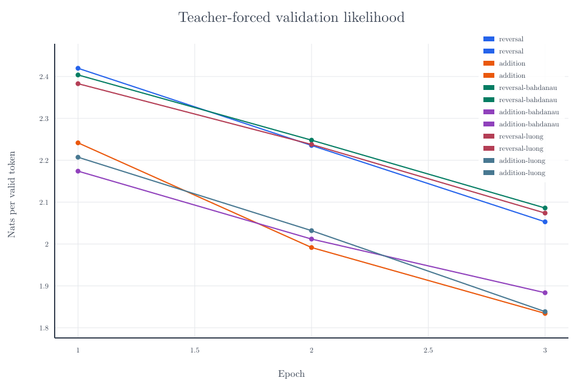

Teacher forcing and free-running reversal and addition
Abstract
Train an LSTM encoder-decoder to reverse digit strings and add small integers. Compare token likelihood under teacher forcing with exact sequence agreement when the decoder feeds back its own predictions.
Generate disjoint examples and compare two decoding modes
Each task uses 128 fitting, 32 validation and 32 test examples. The pinned random streams reject repeated inputs before assigning splits. Reversal preserves leading zeros. Addition uses operands from 0 to 99. The fixed vocabulary includes ten digits, plus, padding, BOS and EOS.
An eight-unit encoder passes both recurrent states to a separate eight-unit decoder. The two networks use a shared token embedding. During fitting the decoder receives BOS and the previous target digit. The loss averages only valid target positions, including EOS. During evaluation the free-running decoder receives only its previous prediction and terminates on EOS or after six steps. The final checkpoint follows the fixed three-epoch schedule. All trials use native initialization and Adam.
Bahdanau attention uses the previous decoder state to score encoder positions with an additive network. The resulting context enters the decoder LSTM alongside its token embedding. Luong global dot attention queries with the updated decoder state and combines its context with that state before projecting to token scores. Both mask padded source positions before evaluating the context.
#include <dm/dm.hpp>
#include <array>
#include <filesystem>
#include <fstream>
#include <print>
#include <random>
#include <set>
namespace n = dm::nn;
namespace seq = n::models::seq2seq;
constexpr int vocab = 14, steps = seq::kSteps, units = seq::kUnits;
constexpr int fit = 128, validation = 32, test = 32;
struct Example {
std::string input, answer, baseline;
};
std::vector<Example> generate(bool addition) {
std::mt19937 random(addition ? 41362 : 41361);
const auto uniform = [](std::uint32_t word, int bound) {
return int((std::uint64_t(word) * bound) >> 32);
};
std::set<std::string> used;
std::vector<Example> rows;
while (rows.size() < fit + validation + test) {
std::array<std::uint32_t, 6> words;
for (auto& word : words)
word = random();
Example e;
if (addition) {
const int left = uniform(words[0], 100), right = uniform(words[1], 100);
e.baseline = std::to_string(left);
e.input = e.baseline + "+" + std::to_string(right);
e.answer = std::to_string(left + right);
} else {
const int width = 2 + uniform(words[0], 4);
for (int i = 0; i < width; ++i)
e.input += char('0' + uniform(words[i + 1], 10));
e.baseline = e.input;
e.answer.assign(e.input.rbegin(), e.input.rend());
}
if (used.insert(e.input).second)
rows.push_back(std::move(e));
}
return rows;
}
struct Batch {
n::Tensor input, input_lengths, teacher, target, target_lengths;
};
Batch encode(const std::vector<Example>& source, const std::vector<std::int64_t>& rows) {
const auto count = std::int64_t(rows.size());
std::vector<std::int32_t> input(count * steps), teacher(count * steps), target(count * steps);
std::vector<std::int32_t> lengths, output_lengths;
const auto token = [](char c) { return c == '+' ? 13 : 3 + c - '0'; };
for (std::int64_t i = 0; i < count; ++i) {
const auto& e = source.at(rows[i]);
const auto base = i * steps;
for (std::size_t j = 0; j < e.input.size(); ++j)
input[base + j] = token(e.input[j]);
input[base + e.input.size()] = seq::kEos;
lengths.push_back(e.input.size() + 1);
teacher[base] = seq::kBos;
for (std::size_t j = 0; j < e.answer.size(); ++j)
target[base + j] = teacher[base + j + 1] = token(e.answer[j]);
target[base + e.answer.size()] = seq::kEos;
output_lengths.push_back(e.answer.size() + 1);
}
return {n::from_vector(input, {count, steps}), n::from_vector(lengths, {count}),
n::from_vector(teacher, {count, steps}), n::from_vector(target, {count, steps}),
n::from_vector(output_lengths, {count})};
}
using Attention = std::optional<seq::DecoderAttention>;
std::pair<n::Tensor,n::Tensor> predict(n::ParameterStore& p, const Batch& b, Attention method) {
if (method) return seq::Attentive(p,n::one_hot(b.input,vocab),n::one_hot(b.teacher,vocab),
b.input_lengths,b.target_lengths,vocab,*method);
const auto zero = n::zeros({b.input.size(0), units});
return {seq::Plain(p, n::one_hot(b.input, vocab), n::one_hot(b.teacher, vocab),
b.input_lengths, b.target_lengths, zero, zero, vocab).logits,{}};
}
n::Tensor token_loss(const n::Tensor& logits, const Batch& b) {
const auto mask = n::cast(seq::ValidPositions(b.target_lengths), logits.dtype());
return n::sum(mask * n::sparse_softmax_cross_entropy(logits, b.target, n::Reduction::None))
/ n::sum(mask);
}
std::vector<int> decode(n::ParameterStore& p, const n::Tensor& input, const n::Tensor& lengths, Attention method) {
const auto zero = n::zeros({1, units});
const auto source = seq::Encode(p, seq::Embedding(p, n::one_hot(input, vocab), vocab),
lengths, zero, zero);
const auto expand = [&](int token, const n::BeamHypothesis<n::LstmState>& parent) {
const auto id = n::from_vector(std::vector<std::int32_t>{token}, {1});
const auto token_embedding=seq::Embedding(p,n::one_hot(id,vocab),vocab);
const auto next=method ? seq::AttentiveStep(p,token_embedding,parent.state,source.memory,lengths,vocab,*method)
: seq::PlainStep(p,token_embedding,parent.state,vocab);
return std::pair{n::LstmState{next.h, next.c}, next.logits.to_vector<float>()};
};
return n::BeamSearch(n::LstmState{source.h.back(), source.c.back()},
seq::kBos, seq::kEos, 1, steps, expand).front().tokens;
}
std::vector<std::int64_t> indices(int start, int count) {
std::vector<std::int64_t> result(count);
std::iota(result.begin(), result.end(), start);
return result;
}
int main() {
const std::string folder = "build/seq2seq_toys/";
std::filesystem::create_directories(folder);
n::NamedTensors history;
for (const Attention method : {Attention{}, Attention{seq::DecoderAttention::Bahdanau},
Attention{seq::DecoderAttention::Luong}})
for (const bool addition : {false, true}) {
std::string name = addition ? "addition" : "reversal";
if (method) name += *method==seq::DecoderAttention::Bahdanau ? "-bahdanau" : "-luong";
const auto source = generate(addition);
const auto val = encode(source, indices(fit, validation));
const auto heldout = encode(source, indices(fit + validation, test));
n::ParameterStore parameters(41360);
predict(parameters,encode(source,{0}),method);
std::int64_t count=0;
for (const auto& parameter:parameters.parameters()) count+=parameter.numel();
const int expected = !method ? 1326 : *method==seq::DecoderAttention::Bahdanau ? 1718 : 1462;
if (count!=expected) throw std::runtime_error("unexpected encoder-decoder parameter count");
n::OptimizerConfig config;
config.kind = n::OptimizerKind::Adam;
n::Optimizer optimizer(parameters, .01, config);
n::BatchOrder order(fit, 8, 41363);
std::vector<double> curve;
for (int epoch = 1; epoch <= 3; ++epoch) {
order.begin_epoch();
for (auto rows = order.next(); !rows.empty(); rows = order.next()) {
const auto b = encode(source, rows);
const auto loss = token_loss(predict(parameters,b,method).first, b);
optimizer.step(n::grad(loss, parameters.parameters()));
}
n::NoGradGuard frozen;
curve.push_back(token_loss(predict(parameters,val,method).first, val).item());
std::println("{} epoch {} validation token NLL {:.6f}", name, epoch, curve.back());
}
n::NoGradGuard frozen;
const auto [logits,alignment] = predict(parameters,heldout,method);
std::vector<std::int32_t> free_running(test * steps);
int matches = 0, baseline = 0;
std::ofstream records(folder + name + "-examples.tsv");
records << "split\tinput\texpected\tbaseline\n";
for (std::size_t i = 0; i < source.size(); ++i) {
const auto& e = source[i];
records << (i < fit ? "fit" : i < fit + validation ? "validation" : "test")
<< '\t' << e.input << '\t' << e.answer << '\t' << e.baseline << '\n';
}
for (int i = 0; i < test; ++i) {
const auto tokens = decode(parameters, n::slice_axis(heldout.input, 0, i, i + 1),
n::slice_axis(heldout.input_lengths, 0, i, i + 1),method);
std::copy(tokens.begin(), tokens.end(), free_running.begin() + i * steps);
const auto gold = n::select(heldout.target, 0, i).to_vector<int>();
matches += tokens.back() == seq::kEos &&
std::equal(tokens.begin(), tokens.end(), gold.begin());
baseline += source[fit + validation + i].baseline == source[fit + validation + i].answer;
}
std::println("{} test token NLL {:.6f}, exact {}/{}, baseline {}/{}",
name, token_loss(logits, heldout).item(), matches, test, baseline, test);
parameters.save(folder + name + "-weights.npz");
n::NamedTensors evidence{{"input", heldout.input}, {"input_lengths", heldout.input_lengths},
{"teacher", heldout.teacher}, {"target", heldout.target},
{"lengths", heldout.target_lengths}, {"logits", logits},
{"decoded", n::from_vector(free_running, {test, steps})}};
if (method) evidence.emplace_back("attention",alignment);
n::save_npz(folder+name+"-test.npz",evidence);
history.emplace_back(name, n::from_vector(curve, {3}));
}
n::save_npz(folder + "history.npz", history);
}reversal epoch 1 validation token NLL 2.419663 reversal epoch 2 validation token NLL 2.235332 reversal epoch 3 validation token NLL 2.052977 reversal test token NLL 2.085723, exact 0/32, baseline 0/32 addition epoch 1 validation token NLL 2.241604 addition epoch 2 validation token NLL 1.991607 addition epoch 3 validation token NLL 1.834183 addition test token NLL 1.820951, exact 0/32, baseline 0/32 reversal-bahdanau epoch 1 validation token NLL 2.403724 reversal-bahdanau epoch 2 validation token NLL 2.247951 reversal-bahdanau epoch 3 validation token NLL 2.085997 reversal-bahdanau test token NLL 2.127567, exact 0/32, baseline 0/32 addition-bahdanau epoch 1 validation token NLL 2.173976 addition-bahdanau epoch 2 validation token NLL 2.011775 addition-bahdanau epoch 3 validation token NLL 1.883599 addition-bahdanau test token NLL 1.863096, exact 0/32, baseline 0/32 reversal-luong epoch 1 validation token NLL 2.382857 reversal-luong epoch 2 validation token NLL 2.237752 reversal-luong epoch 3 validation token NLL 2.073884 reversal-luong test token NLL 2.090509, exact 0/32, baseline 0/32 addition-luong epoch 1 validation token NLL 2.207233 addition-luong epoch 2 validation token NLL 2.031882 addition-luong epoch 3 validation token NLL 1.838464 addition-luong test token NLL 1.855340, exact 0/32, baseline 0/32
Compare validation likelihoods
Teacher-forced likelihood evaluates each prediction with the true prefix. Exact match requires the free-running model to generate every correct digit and EOS. For the plain decoder, validation NLL falls from 2.420 to 2.053 for reversal and from 2.242 to 1.834 for addition. Both plain models get zero of 32 held-out sequences exactly right under free-running decoding.
#include <dm/dm.hpp>
#include <filesystem>
int main() {
const std::vector<double> epochs{1, 2, 3};
auto plot = dm::graphics::RPlot::create();
const std::array<dm::graphics::RGB,6> colors{{{37,99,235},{234,88,12},{5,125,99},
{144,65,188},{180,62,85},{72,120,145}}};
std::size_t series=0;
for (const auto& [name, values] : dm::nn::load_npz("build/seq2seq_toys/history.npz")) {
const auto color = colors.at(series++);
plot.lines(epochs, values.to_vector<double>(), name, color);
plot.points(epochs, values.to_vector<double>(), name, color, 4);
}
const auto path = "build/seq2seq_toys/likelihood.svg";
plot.title("Teacher-forced validation likelihood").x_label("Epoch")
.y_label("Nats per valid token").save_svg(path);
std::filesystem::create_directories("figures");
std::filesystem::copy_file(path, "figures/seq2seq_toys_likelihood.svg",
std::filesystem::copy_options::overwrite_existing);
}